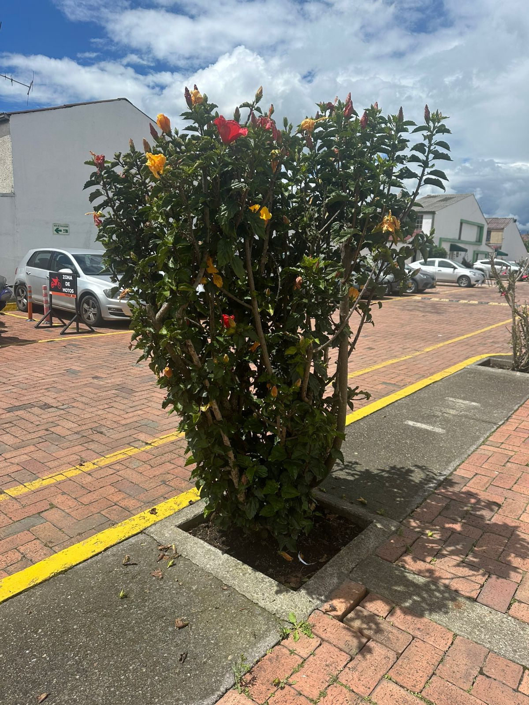

← Volver

Hibisco
Descripción
Es un arbusto perenne y ornamental por sus grandes flores coloridas que pueden ser rojas, rosadas, amarillas, naranjas o blancas.
Características
- Altura: 1 - 4 metros.
- Hojas: Verdes, brillantes, ovaladas y con bordes dentados.
- Flores: Grandes de cinco petalos con un largo tubo central donde estan los estambres.
- Fruto: Capsula seca
Usos
- Muy utilizada para decorar jardines, parques y cercas vivas.
- Extractos de flor se emplean en shampoos y cremas naturales.
Importancia Ecológica
- Sus flores atraen abejas, mariposas y colibríes, promoviendo la polinización.
- Favorece la biodiversidad en jardines y ecosistemas urbanos.
- Sus raíces ayudan a proteger el suelo de la erosió.